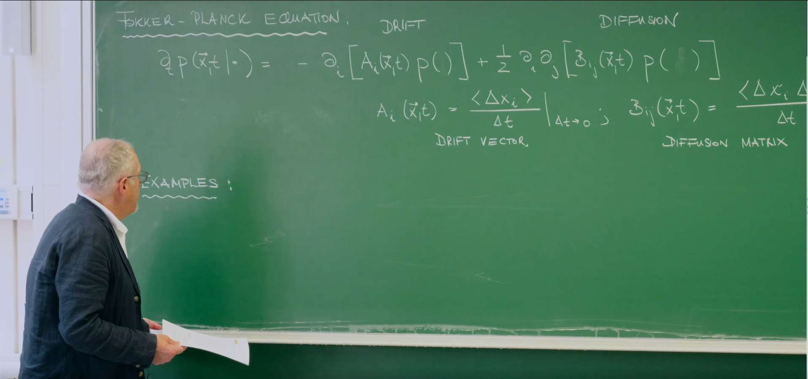
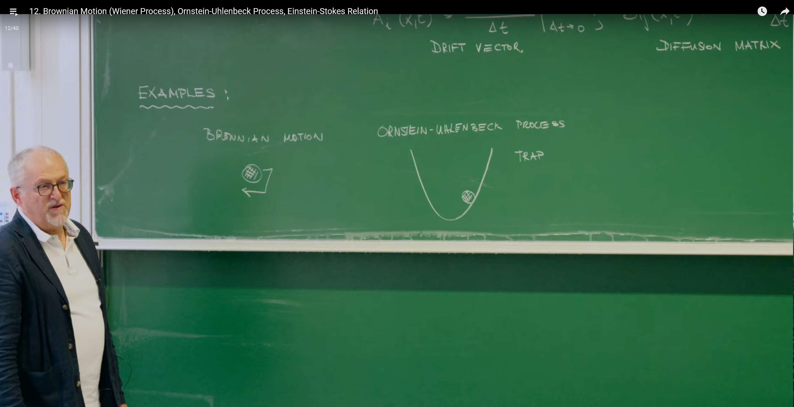
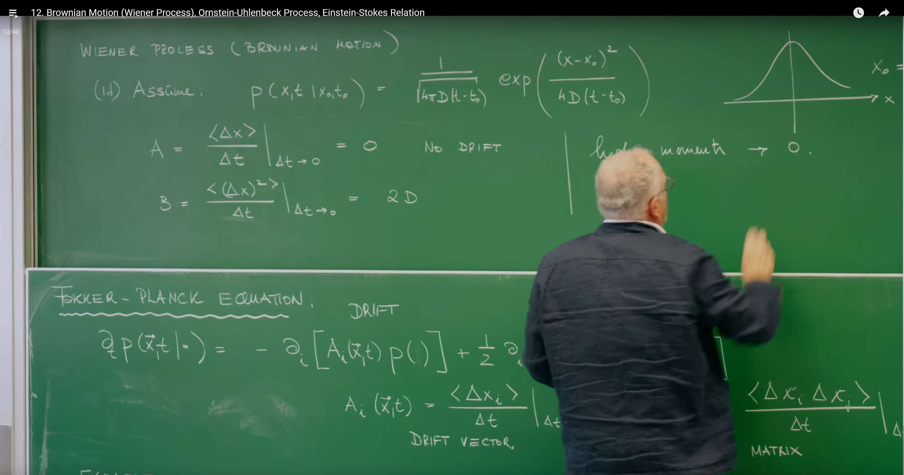
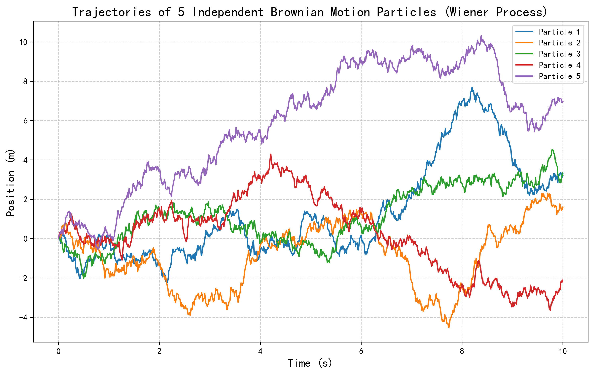
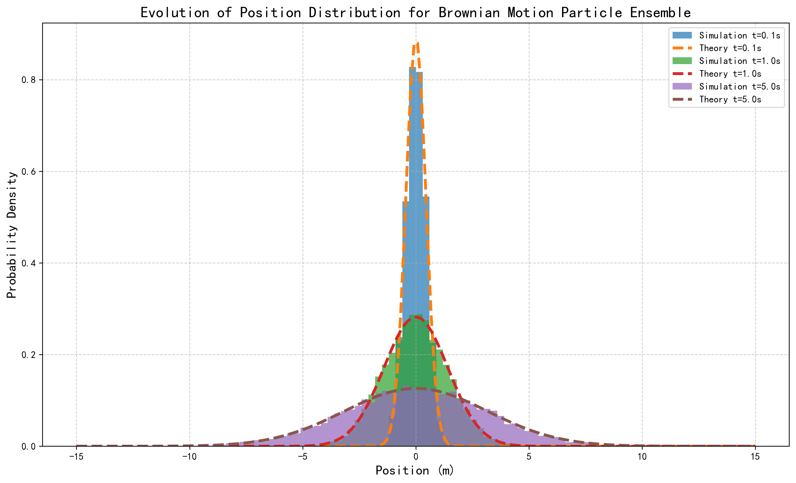
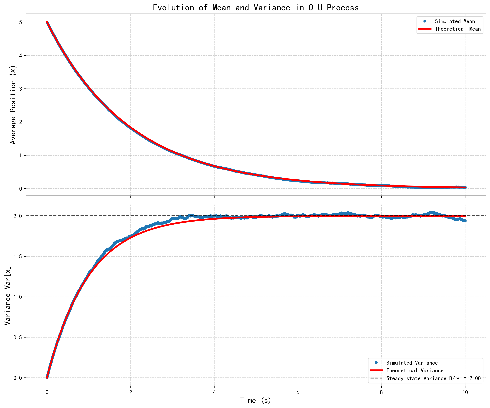

Introduction: The Fokker–Planck Equation as a Unifying Framework¶

In the previous lecture we introduced the Fokker–Planck equation (Fokker-Planck Equation, FPE). This equation provides a universal and powerful mathematical framework for describing the evolution of probability density functions in continuous Markov processes.
For one-dimensional systems, the generic FPE reads
where \(P(x,t)\) is the PDF of finding the particle at \(x\) at time \(t\). The equation contains two core parts describing two basic physical mechanisms:
- Drift term, with coefficient \(A(x)\). This encodes deterministic, systematic influences (a force) and represents the local mean velocity at \(x\), pushing the distribution's center toward preferred directions/locations (e.g., gravity, spring restoring force).
- Diffusion term, with coefficient \(D(x)\). This quantifies random kicks from thermal fluctuations and spreads the distribution in time. \(D(x)\) is directly tied to the variance of displacements.
The FPE follows from the Chapman–Kolmogorov equation via the Kramers–Moyal expansion, under a key physical simplification: in an infinitesimal \(\Delta t\), only the first (mean) and second (variance) moments of the displacement are significant; higher moments can be neglected. This holds for dynamics built from many small, independent random events (e.g., countless molecular collisions), so by the central limit theorem the net displacement approaches a Gaussian process. Thus the FPE captures phenomena driven by smooth deterministic forces plus fine-grained, approximately Gaussian noise.

We now study two fundamental special cases within this framework: the Wiener process and the Ornstein–Uhlenbeck (O–U) process. They represent, respectively, pure diffusion and diffusion with a linear restoring force, and will reveal core principles of stochastic dynamics.
1. Wiener Process — Prototype of Pure Diffusion¶
The Wiener process is the mathematically rigorous formulation of Brownian motion. It models a particle's random motion driven solely by thermal fluctuations, with no external force or potential.
1.1 Basic Properties¶

We can precisely characterize the Wiener process by defining the moments of the particle's displacement \(\Delta x\) over an infinitesimal time interval \(\Delta t\):
Zero drift:
meaning there is no directional bias; left/right are equally likely and the ensemble-averaged displacement is zero.
Constant diffusion:
with diffusion coefficient \(D>0\). Hence the mean-squared displacement (MSD) scales linearly in time, \(\langle(\Delta x)^2\rangle=2D\,\Delta t\). The uncertainty (spread) grows like \(\sqrt{t}\); \(D\) has units [length]\(^2\)/[time].
With \(A(x)=0\) and \(D(x)=D\) constant, the FPE becomes the diffusion equation:
1.2 Diffusion Equation and Its Solution¶
The diffusion equation describes how a probability distribution evolves over time purely due to random motion in the absence of drift. For a particle located at \(x_0\) at \(t_0\), i.e., \(P(x,t_0\mid x_0,t_0)=\delta(x-x_0)\), the solution is Gaussian:
This has mean \(\langle x\rangle=x_0\) and variance \(\operatorname{Var}[x]=2D (t-t_0)\).
1.3 Computational Lab I: Simulating Brownian Motion in Python¶
We simulate: (1) single trajectories and (2) an ensemble distribution obeying the diffusion equation.
1) Single-trajectory simulation
import numpy as np
import matplotlib.pyplot as plt
# Parameters
D = 1.0 # diffusion coefficient
T = 5.0 # total time
dt = 0.001 # time step
n_steps = int(T/dt)
n_traj = 5 # number of independent trajectories
# Simulate
t = np.linspace(0, T, n_steps+1)
traj = np.zeros((n_traj, n_steps+1))
for i in range(n_traj):
xi = np.zeros(n_steps+1)
for k in range(n_steps):
xi[k+1] = xi[k] + np.sqrt(2*D*dt)*np.random.randn()
traj[i] = xi
# Plot
plt.figure(figsize=(10,6))
for i in range(n_traj):
plt.plot(t, traj[i], alpha=0.8)
plt.xlabel('Time')
plt.ylabel('Position')
plt.title('Sample Trajectories of 1D Brownian Motion (Wiener Process)')
plt.grid(True, ls='--', alpha=0.5)
plt.tight_layout()
plt.show()

Each path is continuous yet jagged; Wiener paths are continuous everywhere but nowhere differentiable. Since \(\Delta X\propto\sqrt{\Delta t}\), the finite-difference "velocity" \(\Delta X/\Delta t\) diverges as \(\Delta t\to0\), hence SDEs use differentials \(dX(t)\) rather than time derivatives.
1) Ensemble evolution and comparison to theory
import numpy as np
import matplotlib.pyplot as plt
from scipy.stats import norm
# Parameters
D = 1.0
T = 5.0
dt = 0.01
num_steps = int(T/dt)
num_particles = 10000
x0 = 0.0
x = np.full(num_particles, x0)
snapshots = {}
snapshot_times = [0.1, 1.0, 5.0]
for i in range(num_steps):
t_current = (i + 1) * dt
x = x + np.sqrt(2 * D * dt) * np.random.randn(num_particles)
for ts in snapshot_times:
if np.isclose(t_current, ts):
snapshots[ts] = x.copy()
plt.figure(figsize=(12,7))
bins = np.linspace(-15, 15, 101)
for ts, positions in snapshots.items():
plt.hist(positions, bins=bins, density=True, alpha=0.6, label=f'Sim t={ts}s')
mean_th = x0
var_th = 2 * D * ts
std_th = np.sqrt(var_th)
xs = np.linspace(-15, 15, 400)
plt.plot(xs, norm.pdf(xs, loc=mean_th, scale=std_th), 'k--', lw=2, label=f'Theory t={ts}s')
plt.title('Ensemble Position Distributions vs Diffusion Equation (Gaussian)')
plt.xlabel('x')
plt.ylabel('PDF')
plt.grid(True, ls='--', alpha=0.5)
plt.legend()
plt.tight_layout()
plt.show()

The ensemble histograms match the Gaussian solution, demonstrating how macroscopic determinism (the PDE) emerges from microscopic randomness.
2. Ornstein–Uhlenbeck Process — Constrained Diffusion¶
Many systems are constrained. The Ornstein–Uhlenbeck (O–U) process augments diffusion with a linear restoring force.
2.1 Physical System: Brownian Particle in a Harmonic Potential Well¶

Consider a small particle in fluid, buffeted by thermal noise and tethered by a harmonic potential
The restoring force is \(F_{\rm restore}=-\nabla U=-k x\). In low-Reynolds-number flow (negligible inertia), this balances Stokes' drag \(F_{\rm drag}=\zeta\,\dot x\) with friction coefficient \(\zeta=6\pi\eta R\). Force balance gives
with relaxation rate \(\gamma=k/\zeta\) and relaxation time \(\tau=1/\gamma\). Thus the drift is linear: \(A(x)=-\gamma x\) (mean reversion). Thermal kicks yield constant diffusion \(B=2D\).
2.2 Governing Equation and Solution¶
Substituting the derived drift term \(A(x) = -\gamma x\) and diffusion term \(D\) into the general Fokker-Planck equation, we obtain the governing equation for the O-U process:
This equation vividly depicts a "tug-of-war": the first term (drift term) attempts to compress the probability distribution toward the origin, making it narrower and taller; while the second term (diffusion term) attempts to spread the probability distribution outward, making it wider and flatter. The final state of the system will be the result of these two effects reaching dynamic equilibrium.
To solve this partial differential equation, we employ a very powerful technique—the method of characteristics—combined with Fourier transforms. Below we reproduce this solution process in detail:
1. Fourier Transform:
We define the Fourier transform of the probability density \(P(x,t)\), i.e., its characteristic function \(\phi(k,t)\):
The advantage of Fourier transform is that it can convert spatial derivatives \(\partial/\partial x\) into multiplication by the wavenumber \(k\) (specifically, multiplication by \(ik\)). After applying this transformation, the original partial differential equation becomes simpler.
2. Transformed Partial Differential Equation:
Applying Fourier transform to both sides of the O-U FPE, using integration by parts and transformation properties, we obtain the equation satisfied by \(\phi(k,t)\):
This is a first-order linear partial differential equation for \(\phi(k,t)\).
3. Method of Characteristics Solution:
We seek special curves in \((k,t)\) space, called characteristics, along which the above partial differential equation can be simplified to an ordinary differential equation. These characteristics are given by the equation \(dt/1 = dk/(\gamma k)\), which upon integration yields the characteristic equation:
where \(k_0\) is the initial wavenumber at \(t=0\). Along such a characteristic, the total derivative of \(\phi(k(t),t)\) with respect to time is:
Comparing with the transformed PDE, we find that along the characteristics, the equation simplifies to:
This is a simple first-order ordinary differential equation, whose solution is:
4. Substitution and Solution:
Substituting \(k(t') = k_0 e^{-\gamma t'}\) into the integral, and assuming that at the initial time \(t=0\) the particle is located at \(x_0\), so \(P(x,0) = \delta(x-x_0)\), the corresponding initial characteristic function is \(\phi(k,0) = e^{ikx_0}\), therefore \(\phi(0) = e^{ik_0x_0}\).
Thus, the solution for \(\phi(t)\) is:
5. Inverse Transform Back to Original Variables:
Finally, we express \(k_0\) in terms of \(k(t)\): \(k_0 = k(t)e^{\gamma t}\), and substitute into the above equation to obtain the final characteristic function solution:
2.3 Dynamical Interpretation¶
This characteristic function \(\phi(k,t)\) has a very special form—it is the Fourier transform of a Gaussian function. A general Gaussian distribution has a characteristic function with the standard form:
By comparing our solution term by term with this standard form, we can directly read off the evolution of the mean and variance of the particle position:
Mean:
The ensemble average position of particles starts from the initial position \(x_0\) and exponentially decays toward the center of the potential well \(x=0\). This is completely consistent with the deterministic dynamics solution when noise is completely ignored. This shows that while random noise makes each particle's trajectory tortuous, it does not change the average motion trend of the entire ensemble.
Variance:
The evolution of the variance (i.e., the width of the distribution) of particle positions is more interesting.
-
In the initial stage (\(t \to 0\)), using the Taylor expansion \(e^{-2\gamma t} \approx 1 - 2\gamma t\), the variance is approximately \(\text{Var}[x](t) \approx (D/\gamma)(2\gamma t) = 2Dt\). This indicates that in a short time, the particle has not yet had time to feel the effect of the restoring force, and its behavior is exactly the same as free Brownian motion (Wiener process).
-
As time progresses (\(t \to \infty\)), the exponential term \(e^{-2\gamma t}\) tends to zero, and the variance tends to a constant steady-state value:
This steady state is the most crucial characteristic of the O-U process. It means that the system will eventually reach a dynamic equilibrium: the tendency of the restoring force to pull particles toward the center perfectly cancels out the tendency of diffusion to push particles outward. At this point, the probability distribution no longer changes with time, forming a stable Gaussian distribution centered at the origin with variance \(D/\gamma\). The system "forgets" its initial state \(x_0\).
2.4 Computational Lab II: Simulating a Confined Particle¶
The SDE is
with Euler–Maruyama update
1) Single-trajectory example
import numpy as np
import matplotlib.pyplot as plt
D = 1.0
gamma = 0.5
T = 50.0
dt = 0.01
n = int(T/dt)
t = np.linspace(0, T, n+1)
x = np.zeros(n+1)
x[0] = 10.0
for i in range(n):
x[i+1] = x[i] - gamma*x[i]*dt + np.sqrt(2*D*dt)*np.random.randn()
plt.figure(figsize=(10,6))
plt.plot(t, x, label='Trajectory')
plt.axhline(0, color='r', ls='--', label='Equilibrium (x=0)')
plt.title('O–U Process: Single Trajectory in a Harmonic Well')
plt.xlabel('Time')
plt.ylabel('x')
plt.grid(True, ls='--', alpha=0.5)
plt.legend()
plt.tight_layout()
plt.show()

1) Ensemble mean and variance vs theory
import numpy as np
import matplotlib.pyplot as plt
D = 1.0
gamma = 0.5
T = 10.0
dt = 0.01
n = int(T/dt)
N = 10000
x0 = 5.0
t = np.linspace(0, T, n+1)
X = np.full((N, n+1), x0)
mean_sim = np.zeros(n+1)
var_sim = np.zeros(n+1)
mean_sim[0] = x0
var_sim[0] = 0.0
for i in range(n):
X[:, i+1] = X[:, i] - gamma*X[:, i]*dt + np.sqrt(2*D*dt)*np.random.randn(N)
mean_sim[i+1] = X[:, i+1].mean()
var_sim[i+1] = X[:, i+1].var()
mean_the = x0*np.exp(-gamma*t)
var_the = (D/gamma)*(1 - np.exp(-2*gamma*t))
fig, (ax1, ax2) = plt.subplots(2, 1, figsize=(10,9), sharex=True)
ax1.plot(t, mean_sim, 'o', ms=4, label='Sim mean')
ax1.plot(t, mean_the, 'r-', lw=2.5, label='Theory mean')
ax1.set_ylabel('⟨x⟩')
ax1.set_title('Ornstein–Uhlenbeck: Mean and Variance')
ax1.grid(True, ls='--', alpha=0.5)
ax1.legend()
ax2.plot(t, var_sim, 'o', ms=4, label='Sim var')
ax2.plot(t, var_the, 'r-', lw=2.5, label='Theory var')
ax2.axhline(D/gamma, color='k', ls='--', label=f'Steady var D/γ = {D/gamma:.2f}')
ax2.set_xlabel('Time')
ax2.set_ylabel('Var[x]')
ax2.grid(True, ls='--', alpha=0.5)
ax2.legend()
plt.tight_layout()
plt.show()

2.5 Wiener vs Ornstein–Uhlenbeck: A Comparison¶
| Feature | Wiener process | Ornstein–Uhlenbeck process |
|---|---|---|
| Physical picture | Free dust in unbounded space | Bead tethered by a spring in fluid |
| Drift \(A(x)\) | 0 (no bias) | \(-\gamma x\) (linear restoring; mean reversion) |
| Diffusion \(D(x)\) | \(D\) (const.) | \(D\) (const.) |
| FPE | \(\partial_t P = D\, \partial_x^2 P\) | \(\partial_t P = \partial_x(\gamma x P) + D\, \partial_x^2 P\) |
| Mean \(\langle x\rangle(t)\) | \(x_0\) (constant) | \(x_0 e^{-\gamma t}\) (decays to 0) |
| Variance \(\operatorname{Var}[x](t)\) | \(2Dt\) (unbounded linear growth) | \(\tfrac{D}{\gamma}(1-e^{-2\gamma t})\) (saturates) |
| Steady state | None (unbounded diffusion) | Gaussian with variance \(D/\gamma\) |
3. Einstein–Stokes Relation: A Deep Link Between Fluctuation and Dissipation¶
3.1 Bridge to Thermodynamics¶
As \(t\to\infty\), the O–U process reaches a steady state: a time-invariant Gaussian at the origin with variance
This corresponds physically to thermal equilibrium with the environment.
3.2 Equipartition Theorem¶
For a harmonic potential \(U(x)=\tfrac{1}{2} k x^2\), equipartition gives
so
3.3 Derivation and Insight¶
Equating the two expressions for the same equilibrium quantity,
yields the Einstein–Stokes relation
3.4 Fluctuation–Dissipation Theorem¶
The beauty of this formula extends far beyond its connection of several physical quantities—it lies in the profound physical principle it reveals, which is a specific instance of the Fluctuation-Dissipation Theorem (FDT). Let us interpret both sides of this relationship:
-
Fluctuation: The diffusion coefficient \(D\) on the left side of the equation describes the intensity of intrinsic, microscopic random fluctuations in the system. It quantifies the intensity of "jittering" or "swaying" of particles due to endless random collisions with environmental molecules. This is a quantity related to the "disorder" and "randomness" of the system.
-
Dissipation: The denominator on the right side, the friction coefficient \(\zeta = 6\pi\eta R\), describes a macroscopic, deterministic energy dissipation process. When we try to push a particle through a fluid, the fluid produces resistance, which converts the particle's macroscopic kinetic energy into thermal energy and dissipates it. This is a quantity related to the "damping" and "friction" of the system.
The Einstein-Stokes relation reveals with groundbreaking insight: Fluctuation and dissipation are not two independent phenomena—they are essentially two different aspects of the same physical process. Both processes originate from the same microscopic source—the interactions between the system and the large number of particles in the environment (thermal bath). Those microscopic collisions that cause friction when macroscopic objects move are precisely the same random forces that drive microscopic particles to perform irregular Brownian motion.
Temperature \(T\) plays a crucial role in this relationship, acting like a bridge connecting microscopic random fluctuations with macroscopic energy dissipation. A higher temperature environment means more intense thermal motion of its internal particles. This will both lead to stronger random "kicks" on Brownian particles (larger \(D\)) and produce greater resistance to macroscopic objects trying to pass through it (larger \(\eta\), thus larger \(\zeta\)). The fluctuation-dissipation theorem precisely quantifies the relationship between these two.
Summary¶
Looking back at the logic of the entire lecture, we can see that it actually constitutes an elegant, constructive proof of the fluctuation-dissipation theorem. The Ornstein-Uhlenbeck process is such a perfect theoretical "laboratory" precisely because it is simple enough to be solved analytically, yet complex enough to naturally contain both fluctuation terms (\(D\)) and dissipation terms (via \(\gamma\) and \(\zeta\)) in its mathematical structure. By solving the dynamics of this process and comparing its steady-state solution with thermodynamic equilibrium principles, we not only solve a specific physical problem but also reveal a universal principle that runs through many fields of physics.
This principle has applications far beyond Brownian motion—for example, in electronics, it manifests as the relationship between thermal noise (Johnson-Nyquist noise) of resistors and their resistance values. The root of macroscopic deterministic laws (such as the tendency toward thermal equilibrium) and inevitable dissipation lies in the eternal fluctuations of the microscopic world.